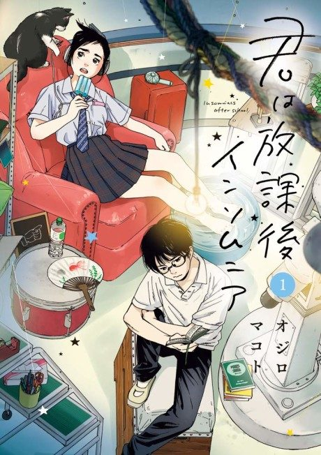

Anime
Anime
Manga2023 · Romance, Slice of Life
Insomniacs After School
君は放課後インソムニア
AniList8.0
Animeter—
Episodes13 ep
MangaCh. 56
Anime finished. Where does the manga pick up?
Start at Chapter56
The anime ends at chapter 55 (Volume 6). Start reading from chapter 56, the first chapter of Volume 7.
155125 end
Insomniacs After SchoolStart reading here